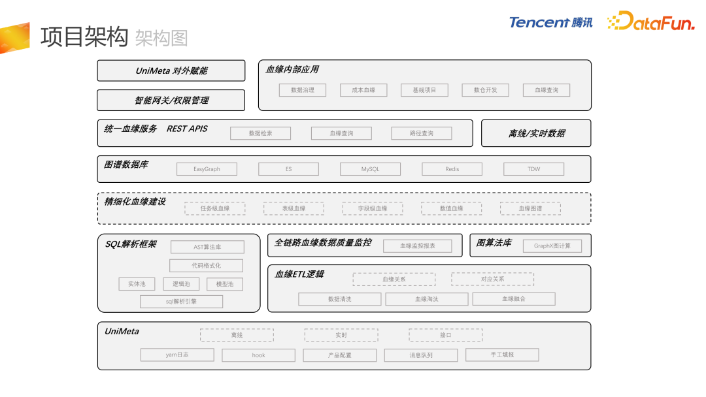

导读 本文将介绍腾讯欧拉数据血缘的建设及应用。
1. 背景和目标
2. 项目架构
3. 模块化建设
4. 应用场景
5. 问答环节
腾讯欧拉数据平台，是一款基于 DataOps 理念，实现生产即治理的一站式数据平台，主要包括三个子产品：- 首先是资产工厂，负责整体的数仓建设、数仓模型的开发；
- 第二块是欧拉的治理引擎，负责全链路成本的数据治理；
数据血缘是欧拉的一个子模块，直接服务于以上三个子产品，也是本次分享的主题。为什么要做数据血缘？主要有两个原因，一个是现状不能满足血缘数据需求，另一个是希望以血缘为基础做更多的事情。之前公司内部另外一个 BG 负责引擎的开发，我们只能拿到 yarn 日志和 hook 的相关信息，所以只能拿到离线数仓内部表级别的数据血缘，拿不到埋点日志下发到管道再接入离线数仓这种链路血缘，因此整体覆盖度不够。另外，血缘的粒度不够细，我们之前拿到的是表级别的血缘，但需要字段级的血缘。同时，接口服务功能较少，有一些限流的限制。还有一个比较重要的问题是缺少血缘图谱挖掘计算模型，包括算法库。我们还希望能够以血缘为基础做更多的事情，包括全链路的数据治理、指标的全链路观测、血缘的成本洞察，以及基于血缘的一些数仓开发。这些问题和需求共同催生了欧拉数据血缘的建设。血缘的建设包括两个方面，首先是提升数据血缘的广度，涵盖从数据生产、数据加工，到数据应用的全链路。包括数据生产环节的腾讯灯塔、大同，数据加工环节的欧拉平台，以及数据应用环节的 DataTalk 报表、TAB 的 ABtest 等等，已覆盖 20+ 产品，形成了非常完整的全链路资源。另一方面，提升数据血缘的深度，做更精细化的血缘建设。除了任务血缘之外，还有表血缘、字段血缘，目前字段血缘是最深的层级，而我们在研发一种更深层级的血缘，称为数值血缘。任务血缘的主要工作是打通各平台产品间的任务级别抽象，实现全链路、跨平台的完整的任务血缘关系图谱，覆盖了腾讯内部多种离线和实时数据产品。表血缘是要打造全链路血缘数据图谱，包括各种表级别的抽象，比如离线 Hive 表、MySQL 关系库的表，还有 OLAP、Impala 等等，消息队列也被定义为表级别的抽象。在表血缘的基础上，我们会把血缘粒度拓展至字段级别。目前已经完成了离线数仓内部 SQL 任务的字段血缘建设。如果不考虑非 SQL 的任务（jar 包任务或 Spark 任务），字段级血缘会产生断层，我们的策略是以表血缘为基础，上下游进行全量依赖。假设下游表的每个字段都依赖于上游表的全部字段，可以把整个字段血缘串起来，避免中间产生断层。数值血缘是我们内部开发的更深层次的血缘。基于 SQL 解析后的 AST，分成实体池、逻辑池和模型池，以这三个池为基础，放在图库里，就可以形成一张非常大的AST 粒度的血缘图谱。覆盖的产品主要包括 calcite 、NTLR 等。数值血缘可以帮助我们识别出加工某个指标所需的全部前置数据集合，这是目前我们在进行的最深粒度的血缘建设。数据血缘有着非常多的应用场景，包括欧拉血缘查询服务，还有很多基线项目、成本分摊项目以及各种数据治理项。覆盖的业务包括整体 PCG 的 ToC 业务，比如 QQ、腾讯视频、腾讯新闻、腾讯看点、微视、应用宝等。项目架构
第一个考察的产品是 Apache 的 Atlas，这也是目前使用率最广的数据血缘开源产品，但在实际应用中存在着一些问题，比如 Atlas 只有表级血缘，字段血缘不完善，且对大数据引擎的依赖比较强，关系扩展也比较麻烦，需要比较多的二次开发。另一些产品，如 OpenMetadata、Datahub，它们对血缘的支持相对比较弱，更侧重于元数据管理和数据发现的服务。Metacat、Amundsen 基本上只有数据发现功能。基于以上原因，我们最终选择基于腾讯丰富的产品生态自建血缘架构，如 EasyGraph 图数据库和成熟的 ES 产品，还有分布式的基于内存的 NoSQL 服务 Meepo 等等。
上图展示了整体的项目架构。最底层 UniMeta，是欧拉内部的元数据管理平台，包含数据的接入和导出。血缘建设是基于 UniMeta 接过来的一些基础数据，比如 Yarn 日志，我们从中解析出读表和写表。UniMeta 中还包括经常用到的 Hive 的 hook 机制。我们也会通过 UniMeta 同步一些产品配置，比如离线表导出到MySQL、Impala、ClickHouse，基本上都是通过产品配置来进行血缘的解析。还有其它一些产品会发来内部血缘的消息队列。极端情况下，比如 jar 包任务，会有一些手工填报的血缘。整体上包括离线、实时和接口三种数据类型。在 UniMeta 基础之上，有血缘 ETL 逻辑加工，常规数仓的建模和加工环节，包括数据清洗、血缘淘汰、血缘融合等。血缘关系整体上分成两类，一类是血缘关系，即存在实际数据流转关系；另一种是我们建立的对应关系，比如表和任务之间或表和字段之间的对应关系。其中有一部分数据会通过 SQL 解析框架，进行 SQL 层级的血缘解析，最终把解析好的数据输出到 ETL。SQL 解析框架，底层是我们自研的 SQL 解析引擎，附带代码格式化。还有基于 AST 的算法库，实现 AST 级别 SQL 的用户操作。在 ETL 基础之上，有全链路的血缘数据质量监控，会生成血缘整体的监控报表。目前，表级血缘的层级有 40+ 层。这里会催生一些数据治理项，在正常的数仓建模情况下应该不会有这么高的层级，我们会把高层级异常的血缘推送给用户，进行血缘的压缩，优化整个数据链路。另外，还会对表的上下游数量进行监控。在血缘基础之上，基于 GraphX 构建了图算法库，因为整体的 AST 血源是一个树形结构。我们利用 GraphX 的迭代计算功能，最终形成精细化的血缘建设，包含任务级血缘、表级血缘、字段级血缘、数值血缘，还可以自定义血缘图谱，这些都会存储到图谱数据库里。底层的数据结构包含 EasyGraph，就是图数据库，ES 用于节点属性的模糊检索，MySQL 用来存储元数据信息，Redis 提供预计算的功能，GraphX 把血源的全部下游整体计算好之后，数据以 KV 的形式放在 Redis 里，增加血缘查询的效率以及接口访问速度。另外还会把血缘在离线仓 TDW 备份。依托血缘数据，以 REST APIS 的形式对外提供统一的血缘服务，包括数据检索服务、血缘查询服务、路径查询服务。通过 UniMeta 的智能网关和权限管理对外赋能，目前更多的是血缘在内部的应用，包括数据治理、成本血缘建设、基线项目、数仓开发、血缘查询。模块化建设
首先是统一的实体 UID 规范。因为图谱包含不同类型的节点，需要设计一套统一的 UID 规范。包含表、字段、任务、消息队列、NoSQL(Redis 或者 Hbase)，还有 HDFS 的路径和 API 接口，都会纳入到全链路的血缘数据图谱里。目前已经接入 40 多个实体类型。这里设计了一套 UID 的生成规则，参考了 URL 的设计理念，其中 product 对应的是 scheme，因为腾讯内部通过规划产品和运营产品来唯一定义一个项目，所以使用 product 对 UID 进行唯一确定。在产品之下会有各种各样的类型，type 字段对应 URL 的 host:port，再通过属性来唯一定义一个实体类型。在 ID 的基础之上，基于 MD5 的 hash 算法生成唯一的 UID，再通过 UID 存储到图库里。我们还做了点边解耦的操作，通过对点、边进行分别的维护，点的维护人和边的维护人可以不一样，这可以保证底层点属性的统一，避免重复接入，还可以提供比较好的灵活性和扩展性。下一个介绍的是血缘的边建设。边建设采用了化整为零的策略，构建原子关系，例如离线数仓内部表和表之间就是原子关系，表导出到 MySQL 或 ClickHouse 也是一种原子关系。关系分为两种类型，一种是存在数据流转的关系，这个关系其实就是普通意义上的血缘关系，比如任务血缘、表血缘、字段血缘。另外一种关系就是对应关系，比如表和任务的对应关系，任务和实例的对应关系。构建了原子关系之后，就可以对这些原子关系进行自由的组合去生成自定义的血缘图谱，并提供了图谱路径的查询接口，例如右侧自定义血缘的接口，可以通过任务找到其下游任务，再通过下游任务找到对应的表，然后再通过这个表找到对应的下游表，最后找到对应的 HDFS，形成一种路径查询。上图是整体的 SQL 解析框架，目前大部分的大数据引擎 SQL 解析都是基于 Calcite 和 Antlr。有这个信息之后，并不是直接对 SQL 进行解析，而是对 Calcite 和 Antlr 生成的语法树进行转换操作，转换成自研的 AST 语法树，会提供一个非常方便的转换模块，相应的有一些完善的 debug 机制，还有类似 Calcite 的语法扩展功能。我们 AI 自研的语法结构，相比原生的 Calcite 会有一些优势。在某些特定的场景下，我们会打通和图库的融合，在图库里存储数仓所有 SQL 任务，这样做的好处在于，比如我们有一个 AST 算法库，从 SQL 中选择一个字段，把所有相关联的逻辑取出来，再组合成线上可以执行的 SQL，就会形成 AST 级别的血缘。我们也有基于 AST 对 SQL 的转换，还有代码可视化的模块，比如可以按照 PCG 内部 SQL 的格式化标准，用户不需要再关注代码格式，只需要通过公用的工具来进行格式化，特别是在进行 code review 的时候。我们以 UDF 的形式对外提供后端的接口服务，还有 SQL 的可视化服务。图算法库是比较有特色的一个功能，基于 Spark 的 GraphX 来进行图计算。目前已经落地的场景，包括血缘数据探查，例如上下游的最大深度，还有层级的分布情况以及血缘环路的检测，我们会进行相应的检测，推送给业务进行数据治理。此外，还有数据治理的挖掘项，包括常见的冷表冷字段的下线，耗时最长链路的优化。第三块，我们会用 GraphX 做血缘的预计算，如果只从图库进行血缘的上下游查询，有时候它的接口响应速度不是那么理想，我们会用 GraphX 做一个图计算，然后把数据放在 Redis 里，提升接口的访问速度。在构建血缘的过程中，会做全链路血缘数据质量的监控和探查。前文中提到了血缘整体的数据监控报表，再来讲一下数据一致性的保证，我们采用了 Lambda 架构来构建血缘数据。在此过程中，需要保证两方面的数据一致性，第一个是离线和实时数据的一致性，因为实时和离线是分别处理的。第二是需要保证图库和离线数据的一致性，离线数据在导入图库的时候可能会产生数据上的偏差。之所以采用 Lambda 架构是因为目前血缘数据仍然以离线数据为准，实时的血缘不能覆盖全部的血缘关系。图计算和挖掘任务是依赖于离线数据的，右边的图是保证一致性的架构。第一步实时任务正常写入 todo。第二个流程，是来解决离线和实时数据的一致性，在 2.1 的时候，会向实时任务发送消费暂停的信号，实时任务就会停止写入图库，再用离线数据去更新图库里的数据，这样来保证离线和实时数据的一致性。第三个流程是用来保证图库和离线数据的一致性，采用图库数据进行一个 dump 操作，dump 之后再和离线数据进行对比，将差异向图库同步。在第四步，向实时任务发送正常消费信号，任务就可以正常进行消费。通过 REST API 对外提供统一的血缘服务。首先数据检索是直接基于图数据存储的 ES 数据，目前可以进行任务节点、表节点、指标的模糊检索。实时血缘查询是基于内部 EasyGraph 图库，来进行实时的血缘查询，包括上下游的多层级血缘查询、血缘可视化的交互与展示，这边也会提供预计算的血缘查询服务，首先使用 GraphX 进行血缘的预计算，比如刚才提到有 4 万多个下游的节点，如果图库好的话需要几分钟，这在产品级别是不能接受的。这种情况下，我们就会使用预计算的数据，响应时间就会压缩到几十毫秒。在统一血缘服务基础之上，会通过智能网关和权限管理进行对外赋能，另一方面我们用内部应用直接进行调用。应用场景

- 首先是数据治理，血缘最直接的应用就是应用在数据治理上，包括冷表、冷字段、甚至 HDFS 冷数据的下线，还有空跑任务、空跑逻辑的下线，耗时最长链路的优化等等。
- 第三是数仓开发，支持 SQL 代码的可视化，逻辑资产管理，低效、无效代码的检测，因为是 AST 级别的血缘，所以能够有效地把低效和无效代码检测出来。另外，会基于 AST 的血缘进行微数仓相关的探索。
- 第四是基线项目，对全链路任务的失败或者延迟进行监控。
- 最后是全链路血缘成本洞察项目，结合血缘和成本核算两块内容。
数据治理，整体按数据治理的难度分为浅水区和深水区。浅水区包含表热度和字段热度，低热度或者无热度的冷表下线、冷字段下线和冷数据下线。再往下一层会有空跑任务的下线和空跑逻辑的下线，如果某个字段判定为冷字段，那么这个字段的所有加工逻辑就会被判断为空跑逻辑，我们会把这些信息发给用户，让用户进行 SQL 级别的下线操作。深水区包括重复计算的判断，也是基于 AST 级别的血缘建设，最终我们希望形成表 ROI、字段 ROI还有指标 ROI 的建设，目前还在开发中。之前的成本核算和分摊不够精确，我们把中台或者上游产品的成本向业务分摊，目前参照的是用量，但是用量难以准确反映出下游实际使用了多少成本。通过把成本和血缘进行结合，能够把每个上游表的成本向每一个下游节点进行分摊，整体构成了全链路血缘成本的链路。右图是整体的构建思路，首先第一层有 a、b、c、d、e、f 6 个节点，每个节点都有对应的成本，逐层进行分摊，第一层 a 节点会向它的下游 b 和 c 分别分摊 100
/ 2，会产生 50 的成本，低的节点目前就会有 150 的成本，依次再进行第二层、第三层的分摊，这样把所有节点的成本分摊到全部的叶子节点。不一定所有的叶子节点都是我们的成本节点，例如原子指标和派生指标，可能派生指标的表是基于原子指标表来进行开发的，但是原子指标和派生指标都会作为成本节点来进行分摊。这里我们碰到一些问题，例如成本节点如何确定？目前采用的方式是，把所有的叶子节点判断为成本节点，但在实际业务中会与此不太一致。所以我们也提供了一个方案，让用户自己来确定是否是成本节点，自行进行补充和选择。第二个问题就是成本逐层向下分摊时的权重问题，目前我们采用的是向下游平均分摊成本的方式，各个子节点的权重是 n 分之一，但很多业务提出这样做是有问题的，理想的方式是按照下游的实际使用量，包含字段维度和记录数的维度，字段维度就是下游使用了上游表的多少个字段，然后记录数维度就是下游在它的 where 条件中用这个条件查出来了多少记录数，目前还在研究与开发中。还有环路问题，稍微有些复杂，我们考虑了几种方案。首先把环路进行拆解，从 c 到 a 就不会去分担成本。第二个方案是是无限循环的分摊方案，它会让环路进行无限循环，最终它会在每一个节点上分摊到无限循环之后的成本，其实可以通过无穷级数来事先预计算，不需要无限循环，只需要循环一次，乘以无穷级数的求和的结果就可以了。不过我们最终采用的是环路的整体判断方案，把 a、b、c 作为环路的整体，然后再向 d 进行分摊。第四个是图计算的性能问题，我们用 GraphX 进行图计算，迭代次数过多，会有数据倾斜的问题，我们综合采用了多种方案来进行性能优化。实际应用可以使成本治理，从单点扩展到全部链路，成本分摊的逻辑，更加符合数据加工的逻辑。我们可以帮助业务直接观察到自身的成本来源，帮助上游产品(数据中台)向下游分摊自身的成本。另外我们会针对单个节点，给出对应的成本优化建议。最终我们希望以血缘成本为基础，进行数仓的全局优化。最后是基线项目，对整个任务链条进行监控和保障。具体实现过程为，A、B、C、D 是正常的数据链路，比如 D 是保障任务，某一天 B 任务延迟，导致其下游延迟。在基线项目中有一个水位线的概念，与 Flink 处理延迟消息的水位线比较类似，因为 B 的延迟导致了 D 的水位线超过了预警线，在这种情况下，会在整个链条上进行预警，这只是单个任务。比如 D 任务可能会有其他的路径，它的每一条路径都会推高 D 的水位线，如果超过预警线就会进行监控预警。上图是基线项目的整体结构，可以实现全链路的可追踪、可预警和可归因，比较核心的服务，例如完成时间的预测、动态最长路径的推送、历史最长路径的计算，会以两种形式推送给用户，第一种是企业微信以文本形式来推送，第二种是通过一个平台，以甘特图的形式展示出全链路整体的延迟或者监控情况。问答环节
Q1：请问从头开始血缘关系建设的话，是从任务到字段建设好，还是从字段到任务建设好？A1：我们推荐从任务到字段，表血缘需要和任务血缘进行对齐操作，字段血缘也需要和表血缘进行对齐操作。表血缘的上下游有，它的字段血缘肯定是要有上下游关系的。还有一个情况，目前任务级血缘是最准的，因为任务血缘是用户进行线上的任务增删改查的操作，下发的消息或者 MDB 数据，所以我们还是推荐从任务血缘向表血缘和字段血缘进行向下建设。A2：我们有一个内部监控，这个监控只能去监控解析的成功率和一些比较固定的形式。我们目前采用的方法还是结合固定监控和人工探查。比如字段血缘，其实目前的解析准确率已经很高了，能达到 99% 以上，但是 99% 这个数值，也是通过人工选取一些样例数据，对比解析的结果和人工判断的结果，得到的准确率。Q3：在读写数据的时候用的 JDBC 或者自定义的 data source，怎么把这些血缘串联起来？现在是否支持？A3：我们目前能够收集到的就是任务的配置，但是 JDBC 我们目前还没有介入到这一块，因为可能涉及到jar 包任务。刚才提到 jar 包任务，我们会进行上下游表级血缘的全量依赖，并对字段级别进行存量依赖。我们会分两个概念，表级别的，我们可以通过配置来拿到，字段级别就会使用表级别的血缘进行上下游的存量依赖。A4：基线项目目前主要面对的是 DE 和 DS，即数据工程师和数据分析师，保证任务和指标能够正常产出。他们会关注任务今天为什么会延迟，会逐层地往上找，我们通过基线项目及时给他发一个预警，告诉他链条中哪一个节点出了延迟或者出了问题，方便快速地进行定位。Q5：支持 Spark dataframe 的字段血缘吗？A5：这个属于 jar 包任务，目前处于全量依赖的阶段，根据表血源去把字段血源制成全量依赖，避免字段级别的血缘突然在某一层断掉。A6：SQL 解析框架用到的数据结构和算法会比较多，因为这个是纯自研的 SQL 解析框架，并且它和普通的 SQL 解析框架还不太一样，它不是直接去写 SQL 的 Parser，而是基于 Calcite 和 Antlr 解析好的 AST 语法树，进行转换操作，转换到我们自研的语法结构。数据结构主要是递归和回溯，另外有比较细节的算法，处理某个问题节点会应用到特定的算法。Q7：欧拉平台考虑对外开放吗？还是只对内？如果对外开放依赖组件这么多，会不会有维护和运维的成本？A7：据我了解，是有对外开放规划的，而且目前已经和多方进行了合作。欧拉平台有一些模块集成在腾讯云上，有对外售卖。例如治理引擎，对事后的存量数据资产进行问题的扫描、发现、推进、治理等等。这个模块目前在腾讯云上是有对外开放的。欧拉在内部的平台更加完善，功能也更多，有一些跟内部的组件有深度的耦合和依赖。未来我们也会逐步考虑有哪些组件可以抽象出来，对外开放。如果这个文章对你有帮助，不要忘记 「在看」 「点赞」 「收藏」 三连啊喂！